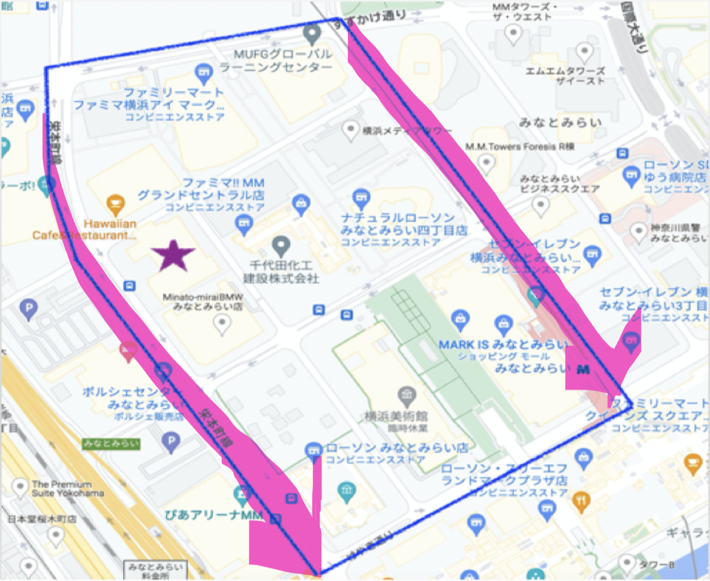
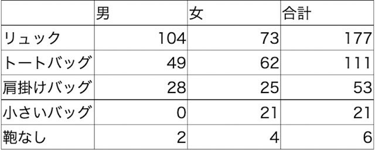
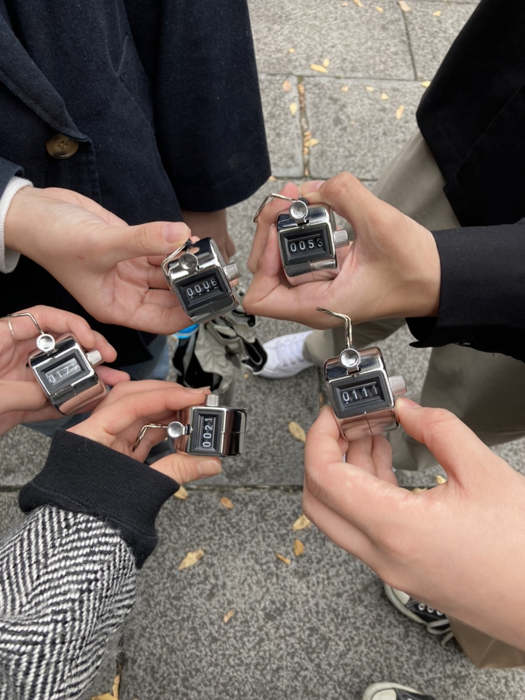
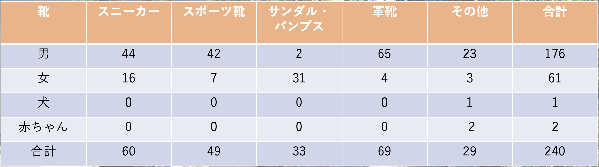
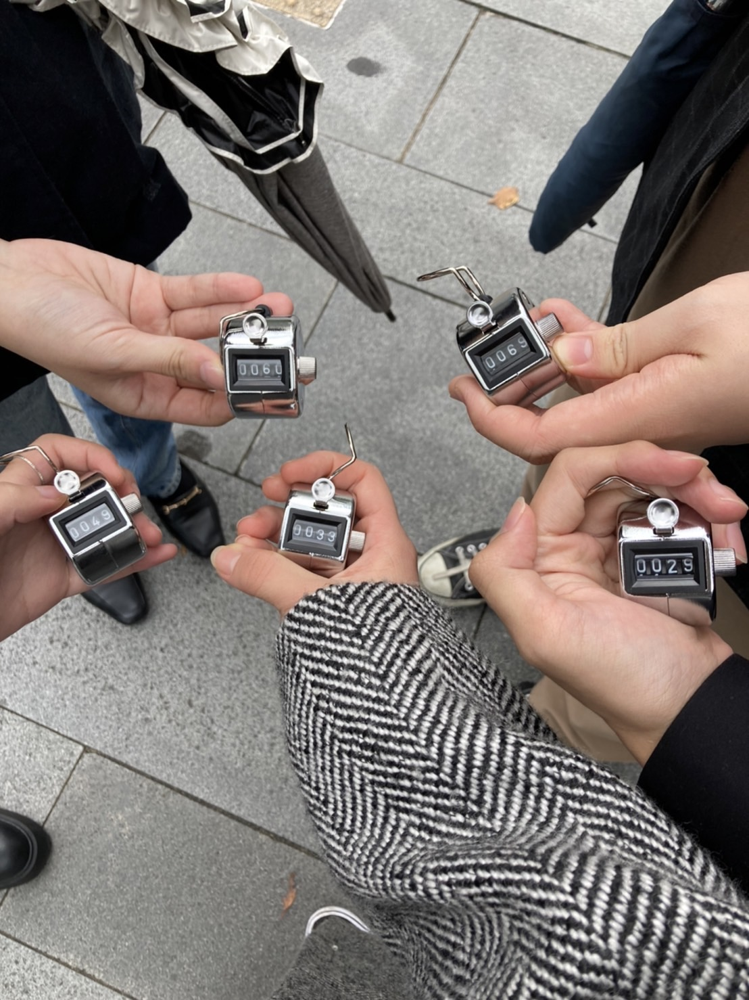

第3回 〜フィールドワーク〜
1.移動観察；課題
◯観察内容
観察日時：2022/10/18 13:40~14:00
天気：曇り
観察対象：カバン
観察の焦点：
カバンの種類
男女の持っているカバン
観察方法：移動観察
移動観察をするにあたって私たちの班は携帯を使って動画を撮影しました。
＜観察エリア＞

この地図上の左側の線を歩きました。また学校側の歩道ではなく、反対側の歩道を歩きました。移動途中にライブ(もしくは握手会)のための長蛇の列や待ち人に遭遇しました。それまでに遭遇していた人は、会社員や学生など似たようなファッションであったのが、そのエリアのみ圧倒的にリュックが多かったです。考えられる理由としてはライブのグッツを入れるためだと考えます。
〜結果
ライブで大人数がいたため正確な数字になっていないかもしれませんが、結果は以下の通りでした。
 
まとめ
リュックの利用者の多さから、リュックの利便性がうかがえた
カバンを見るだけではあまり季節感は感じることができなかった
用途によって変わるのはブランドや色よりもサイズだと感じた
カバンなしの人の多くは勤務中の人や自転車に乗っている人であった
基本的に身なりにあったカバンを持つことが多い様子であった
感想
ライブがあったということもあり、リュックの利用者が圧倒的に多かったことが見受けられました。私の中でとても印象的だったのは男性で小さなバッグを持っていた人が少なかったことと、カバンなしの男性が女性より少なかったことです。女性の方が荷物が多い印象であったためどうしても女性は大きなカバンを利用しがちだという考えがありました。同じ観察を休日に行ったらまた別の結果が出たかもしれません。
2.定点観察；授業まとめ
◯観察内容
観察日時：2022/10/18 14:00~14:30
天気：曇り+一時的に強風あり
観察対象：靴
観察の焦点：
靴の種類
老若男女の履いている靴
観察方法：定点観察
定点観察をするにあたって私たちの班は携帯を使って動画を撮影しました。今回はタイムラプスを利用し、Queens square前の交差点で行いました。
＜観察エリア＞
この地図上の右側の線を歩いている人の定点観察を行いました。
〜結果
結果は以下の通りでした。
 
まとめ
革靴を履いている人の大半はスーツを着たサラリーマンであった。
「その他」に含まれているが、女性会社員のパンプスの割合がほとんどであった
季節的にブーツが多く見受けられると考えていたが、あまり多くなかった。
スポーツ系のスニーカーは男性が多い傾向にあった。
男女関係なくお年寄りの靴はあまり綺麗と言えるものではなかった。
若者の靴は新品に見えるぐらい綺麗であった。
若者と年寄りとでは靴に対する価値観が違う
感想
観察する環境がとにかく過酷でした。移動観察の時は動いていたためあまり感じることのなかった寒さが一気にきて、プラスで風が強かったため耐えることとの戦いでした。意外だったのが、この時期にクロックスやビーサンを履いている人がいたことです。また、犬に靴を履かせる飼い主もいますが、それは見受けられませんでした。横浜エリアは会社員が多いため男性は革靴、女性はパンプスが圧倒的に多かったです。カバンと同様に、身なりにあった靴を履く人が多いことが窺えました。また、会社員以外の人の多くはスニーカーやスポーツシューズでした。このように仕事以外の人は歩きやすさを重視することが見られたので、時間を変えて観察することでより違った結果になるだろうと思いました。